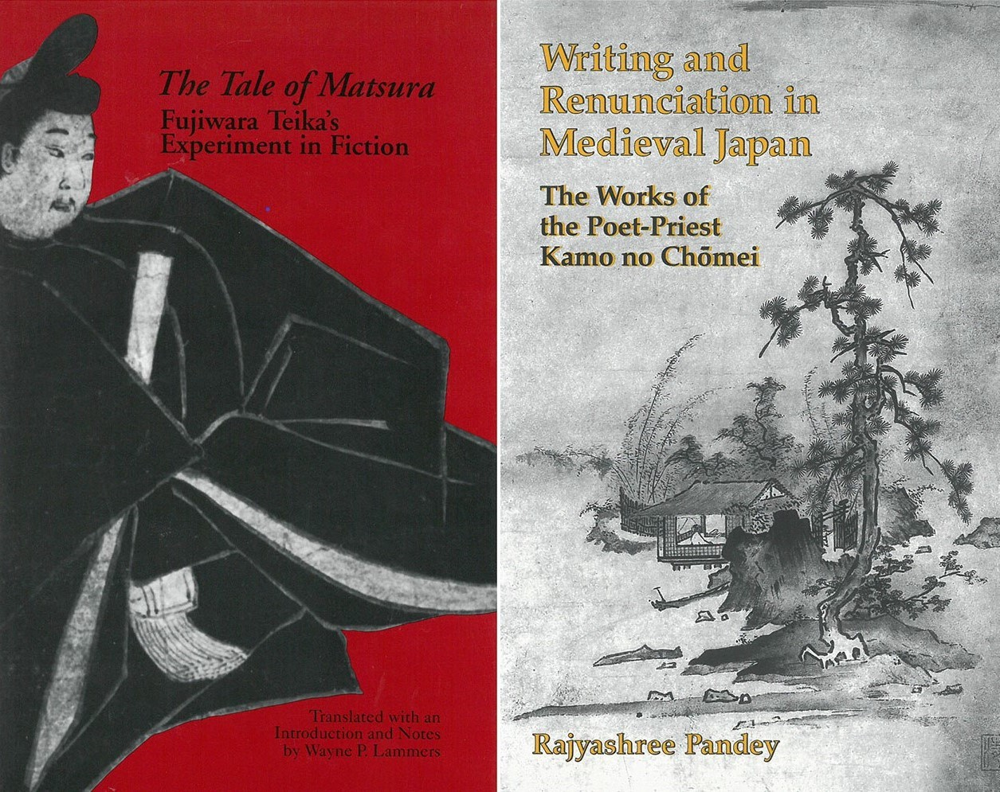

Aug 18–Apr 20
Humanities Open Book at University of Michigan Press
The University of Michigan Press was awarded an NEH/Mellon Humanities Open Book grant to digitize one hundred books from three Asian studies backlists. I joined this project to clean metadata, write book descriptions, review rights and permissions, correspond with authors, and prepare digital books for Michigan's multimedia book platform Fulcrum.
Through this project, I have experienced the complexity of large digitization projects, applied concepts from information law, used Python to merge spreadsheets, and advocated for open access to a community of humanities scholars.